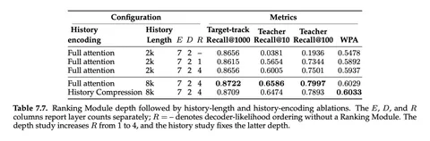

В этом месяце у службы рекомендательных технологий Яндекса произошли сразу два больших релиза.
Сначала показали вторую версию Gryphon — unified-архитектуры, которая объединяет в себе кандидатогенерацию и ранжирование. Это альтернативный OneRec подход к построению рекомендательных end-to-end-моделей.
А сегодня представили Sona — итог целого года работы команды, в результате которого удалось заменить весь стек рекомендаций Яндекс Музыки на единую модель. Внутри репорта — много деталей об архитектуре, инфраструктуре, многочисленные аблейшны. Это лучшее внедрение трансформеров в истории А/B-тестов в Яндекс Музыке.
Три основные вещи, благодаря которым это получилось.
1. Масштабируемая архитектура
Encoder-decoder, обучающийся хронологически на задачу Next Token Prediction без единой ручной фичи. Одной из самых сложных частей было сделать рецепт токенизации, который бы обеспечивал рост качества при росте словаря и числа токенов на документ.
2. Единая модель кандидатогенерации и ранжирования
OneRec ранжирует кандидатов отдельной моделью, причём с использованием ручных фич. Мы же стремились к совместному рецепту обучения и инференса. Проблема в том, что задача ранжирования слишком спарсовая и модель просто не обучается выполнять её достаточно хорошо. Решение — сжать год данных в ранжирующую модель, обучающуюся авторегрессивно, дистиллировать эти знания в совместную модель.
3. Инфраструктура обучения и инференса
Любые большие изменения в ML приводят к настолько же большим изменениям в инфраструктуре. Нам пришлось фактически построить новый движок рекомендаций с нуля. Очень важной компонентой стало онлайн-обучение: end-to-end-путь события от возникновения до обновления модели в инференсе укладывается в 1 час в 99% случаев.
Чтобы лучше понять, что именно в модели поменялось между двумя А/B-тестами — который показывали в Gryphon-v2 и который репортим в Sona, — посмотрите табличку с масштабированием слоёв ранжирующего модуля и контекста и компрессией истории (картинка №2).
По сравнению же с текущей продакшен-системой в Sona получили статзначимый рост главных метрик:
Причём это прирост поверх улучшений от предыдущих внедрений, которые оставались в контрольной выборке в продакшне.
Рост Active Users оказался в 2,35 раза выше прироста, который ранее дала Argus — самая сильная модель, использовавшаяся на этой поверхности до Sona.
Главный результат работы — получили одну совместно обучаемую модель, которая заменяет собой многоступенчатый рекомендательный каскад и при этом повышает качество рекомендаций на реальном пользовательском трафике.
Подробнее о том, как всё устроено и как к этому пришли, руководитель службы рекомендательных технологий Николай Савушкин расскажет на Practical ML Conf.
ML Underhood

